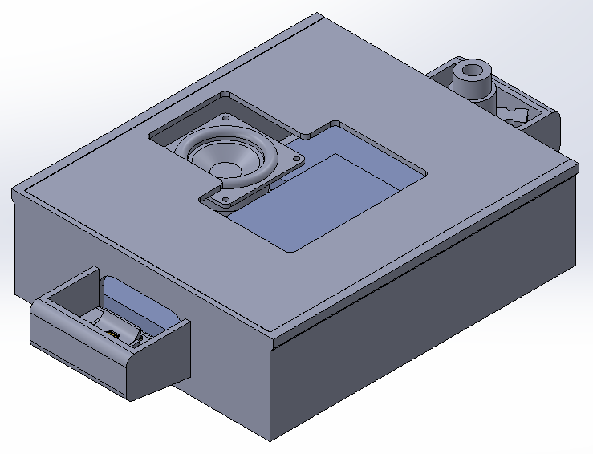
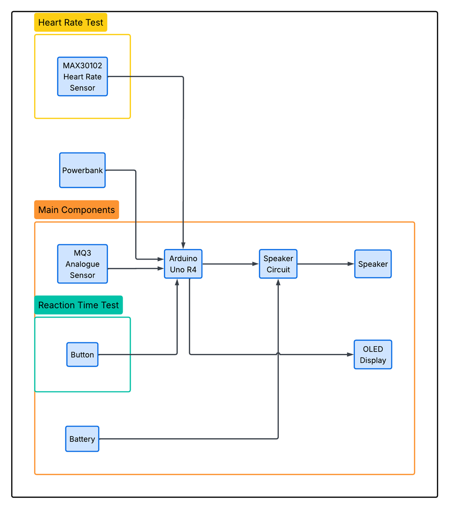
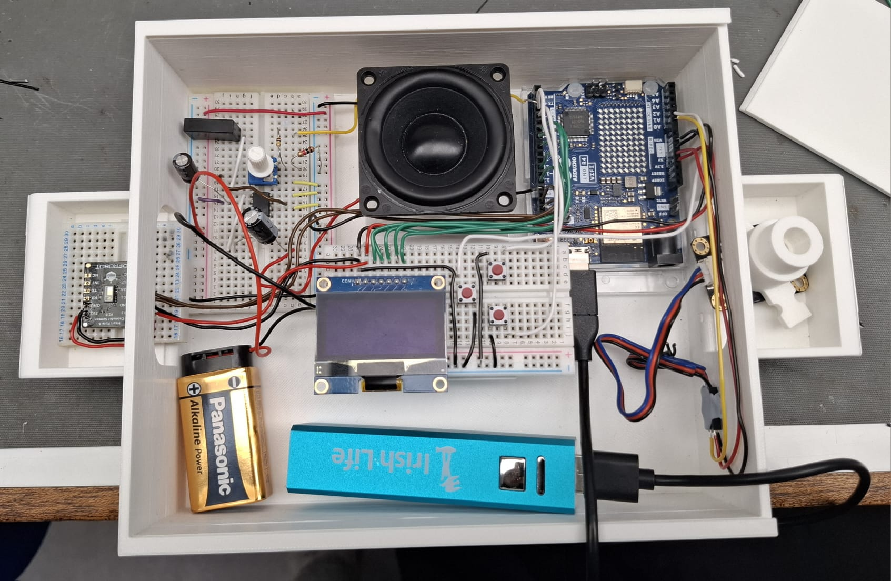
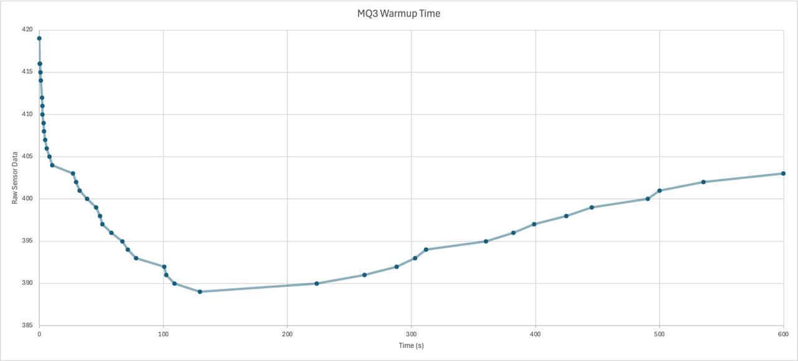
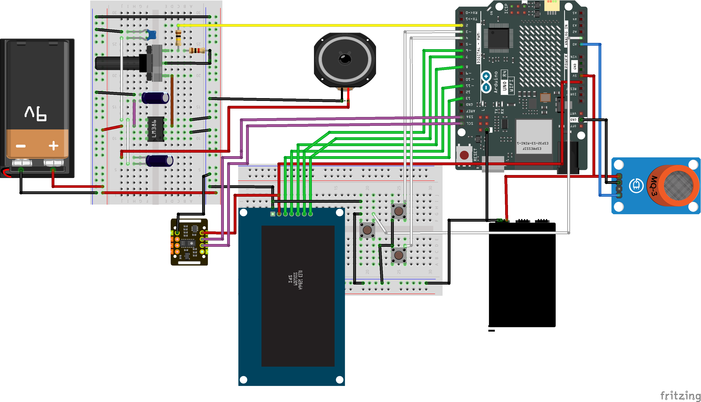

Embedded systems / Product development
Sobriety Suite





01 / 05
Sobriety Suite is an educational embedded-systems prototype combining breath-alcohol sensing, reaction-time testing and heart-rate measurement in a portable enclosure. An Arduino UNO R4 WiFi coordinates the sensors, on-device interface and a local web page for viewing results. The project focuses on integrating electronics, firmware and mechanical packaging; it is not a certified medical device or a way to determine fitness to drive.